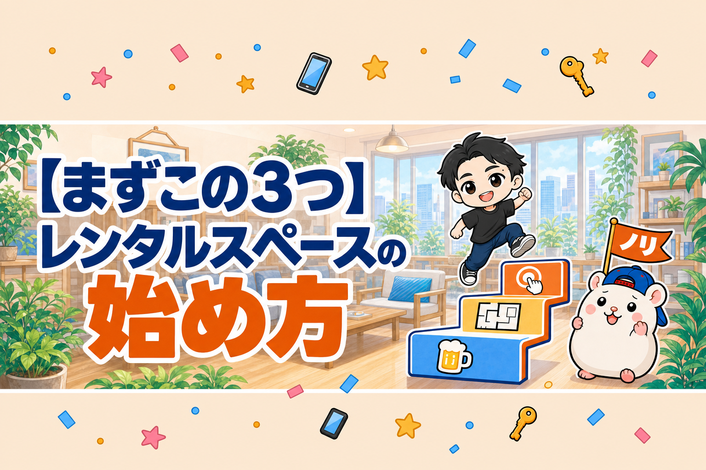
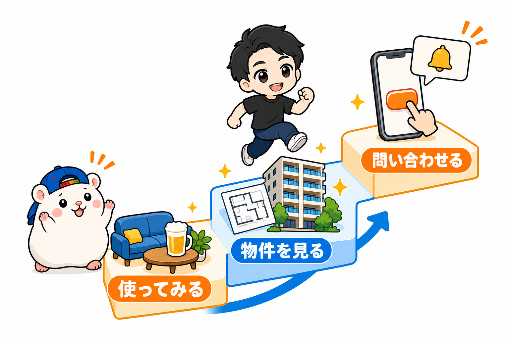
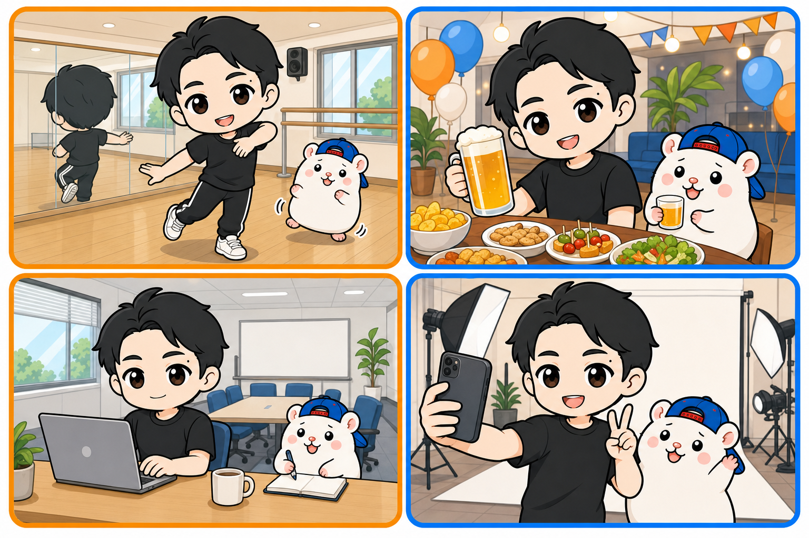
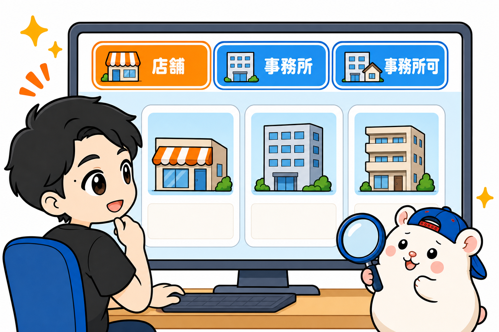
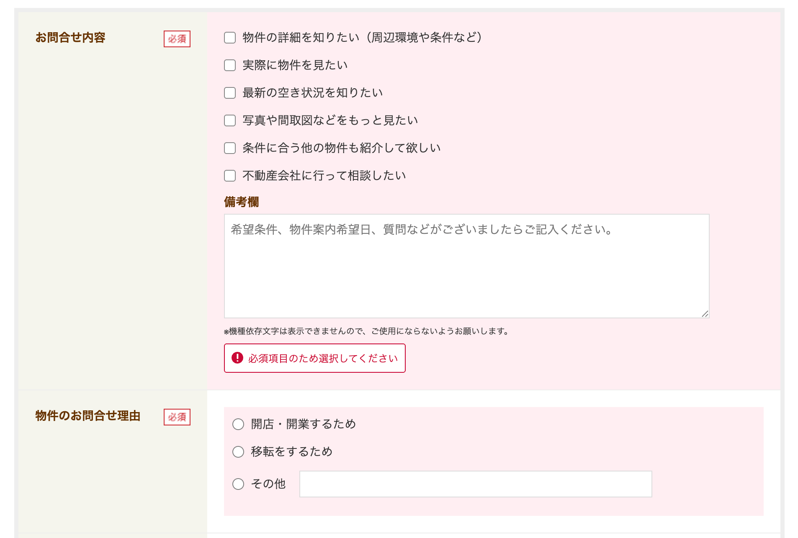
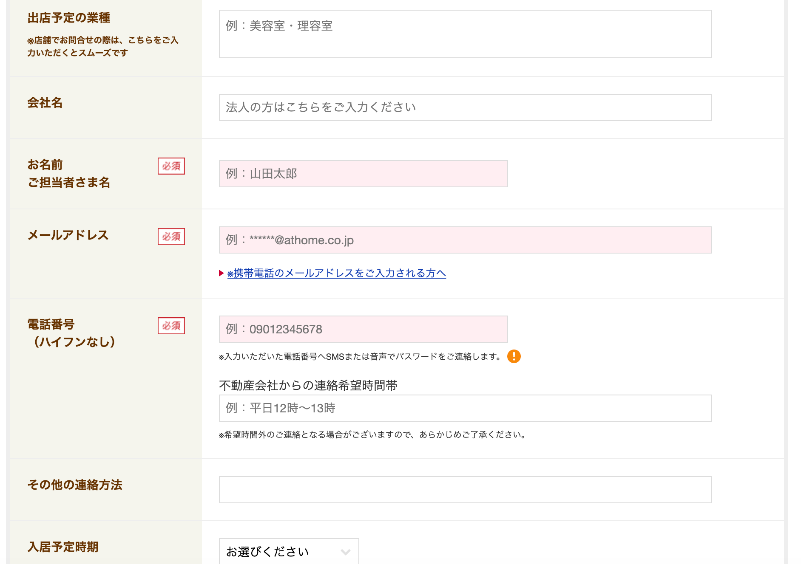

レンタルスペースを始めたい。
でも、何から手をつければいいか分からない。
そういう人に、まずやることを3つだけ書きます。
「ベイビーステップ」という言葉があります。
赤ちゃんの一歩。
いきなり走らず、まず小さく踏み出す、という意味です。
レンタルスペースを始めるためのベイビーステップは、この3つです。

① お客さんとして使ってみる
② 物件を見てみる
③ ノリで問い合わせる
どれも、お金はほとんどかかりません。
そして、3つとも今日できます。
① 実際にお客さんとして使ってみる

最初の一歩は、自分が出店してみたいと思うレンタルスペースを、お客さんとして使うことです。
・ダンススタジオで、軽く体を動かしてみる
・パーティースペースで、ビールを飲む。ゲームをする
・貸会議室で、テレワークする
・撮影スタジオで、自撮りしてみる
ここで手に入れるのは、知識ではありません。
「できそう」という感覚です。
「こんな感じなんだ〜」
「この広さで、この値段なんだ」
「鍵はこうやって開けるんだ」
使ってみると、頭の中のレンタルスペースが、体の感触に変わります。
ここが変わると、あとの2つが軽くなります。
② アットホームで物件を見てみる

次は、物件サイトです。
ぼくはアットホームを使っています。
見るのは、この3種類。
・店舗物件
・事務所物件
・マンション(事務所可)
どこの物件を見るかは、順番があります。
まず、①で実際に使ってみたレンタルスペースの物件。
なければ、その近隣の物件。
それから、自分の家の近くの物件。
あとは、なんとなく儲かりそうな場所の物件。
ここでも、手に入れるのは感覚です。
「こんな感じの物件を借りているんだな」
「物件って、こうやって掲載されているんだな」
「事業用の物件って、こんな感じなんだ」
ふつうの生活をしていれば、住居用の物件しか見ることはありません。
事業用の物件のページに入る、物件のシャワーを浴びる。
事業用の物件を見ることに慣れるのが、この一歩です。
▼物件の探し方は、こちら

③ ノリで問い合わせる
安くて良さそうな物件を、いくつかピックアップします。
そして、気楽に、ノリで問い合わせます。
問い合わせは電話ではありません。
問い合わせフォームから超カンタンにできます。
下の画像は実際の入力項目、たったこれだけです。


ノリで問い合わせをする。
ここが、いちばん大事なところです。
問い合わせボタンを押した瞬間、サイが投げられた状態になるからです。
不動産屋さんから返事が来て、内見の日程の話になって、あとは自動で進んでいきます。
自分で頑張って進めなくても、向こうから来ます。
だからといって、問い合わせることに躊躇は不要です。
みんなそうやってきたのだから、誰にでもできます。
このやり取りで、事業用の賃貸に慣れます。
1回やると、次の問い合わせのハードルが、ぐっと低くなります。
ぼくの1号店は、不動産サイトから酔った勢いで問い合わせた物件でした。
それが、そのまま1号店になりました。
いまも毎月15万円の利益が出ています。
▼酔った勢いの話は、こちら

▼問い合わせで聞かれることは、4つだけです

まとめ: ①のときに、③までやってしまう
3つ書きましたが、本当は分けなくていいです。
①のときに、③までやってしまう。
パーティースペースでビールを飲みながら、スマホでアットホームを開く。
その場所の近くの物件を見る。
安くて良さそうなのがあったら、その場で問い合わせる。
超ノリで。
それで、サイは投げられます。
あとは自動で進みます。
□ お客さんとして使ってみる
□ アットホームで物件を見てみる
□ ノリで問い合わせる
この3つの先の手順は、こちらに全部書いてあります。
▼レンタルスペースのはじめ方 全8ステップ

今週末、どのレンタルスペースを使ってみますか?
▼もう1つの副業、AI社員だけのeBay輸出店の実録🐹

▼ブログ(レンスペ×eBay、全記事まとめ)

問い合わせのあと、内見から開業までのやり方は、教科書にぜんぶ書いています。
レンタルスペース経営の教科書

販売価格は3部売れるごとに2,000円ずつ値上がりします（上限あり）。内容・最新価格は販売ページをご確認ください。